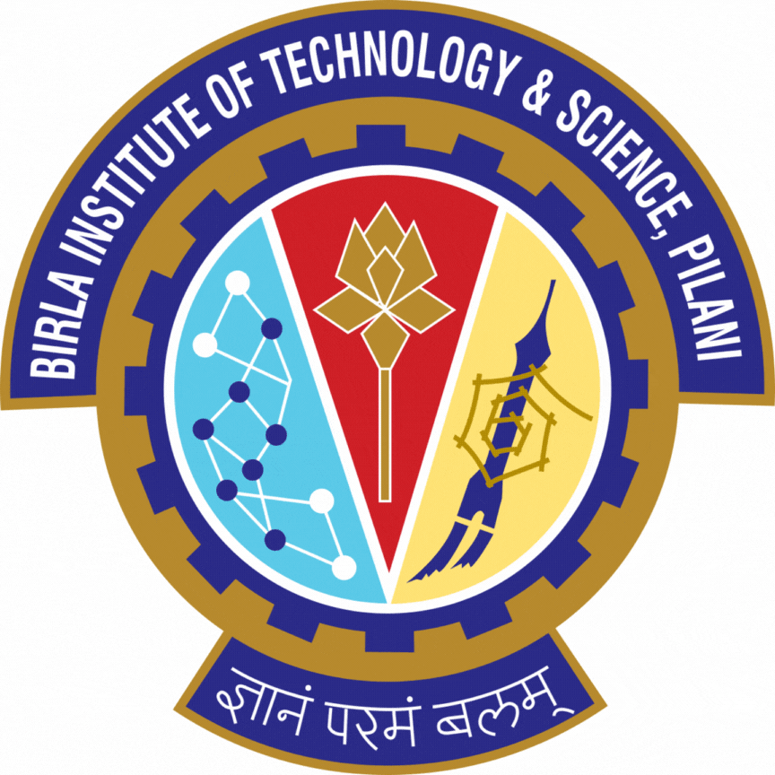
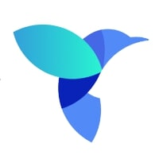
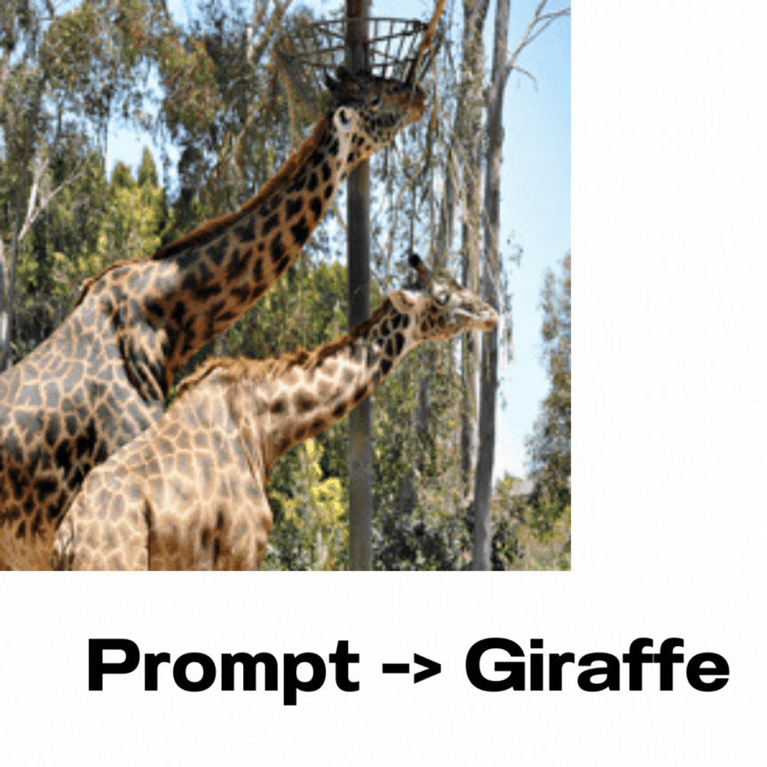
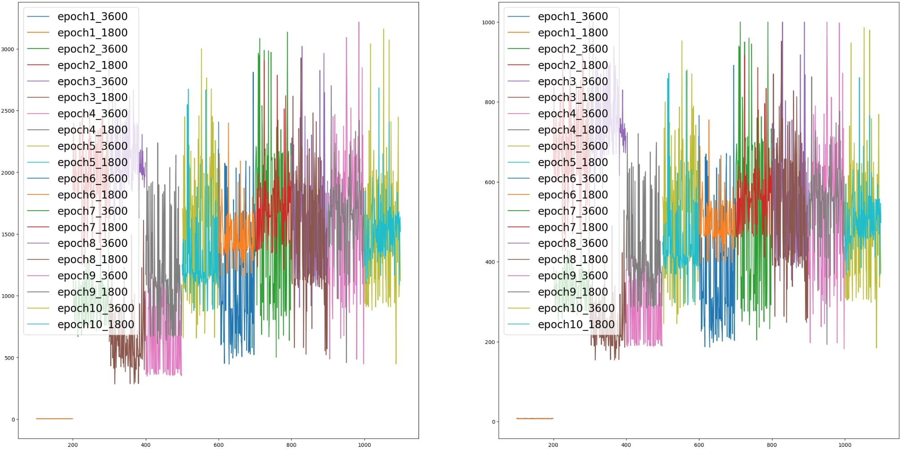
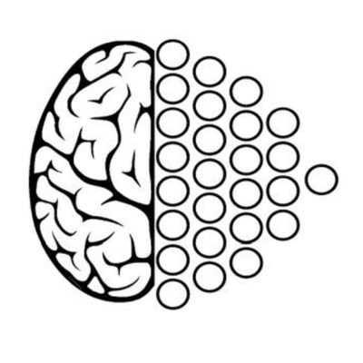
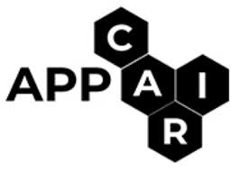
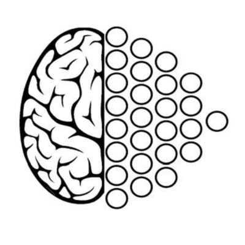
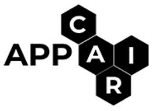

{kind=link}
|
I am an undergraduate student at BITS Pilani, Goa Campus where I'm pursuing Bachelor of Engineering in Computer Science. I am currently working under Prof. Ashwin Srinivasan , Prof. Sidong Liu and Prof. Tanmay Verlekar at APPCAIR on developing a generalist AI for radiology reports.
I am also a member of SAiDL, Society for Artificial Intelligence and Deep Learning at BITS Goa; we try to inculcate a spirit of AI and DL in the university through open source projects and personalised courses. My research interests revolve around Graph Neural Networks, Multimodal Multitask Learning and Machine Perception. In my free time you'll probably find me reading up on theoretical computer science (sorry, not sorry). I am a pretty radical supporter of R&B and rap (and Dave Chapelle). Apart from this, I love to teach (just about anything) and am an active member of the institute's Table Tennis team. ~ The best way to understand something is to explain it ~ |
|
October '23 |
Check out our annual AI Symposium! Register here! [linktree] |
|
September '23 |
I have been selected as a Lab assistant for Rex Ying's Lab at Yale! |
|
August '23 |
One of the 8 people selected for a Reading Course on LLMs instructed by Prof. Lovekesh Vig from TCS Research! |
|
August '23 |
I will be an instructor for the CTE course "Intro to ML/DL" with Yash and Tejas, this semester. |
|
August '23 |
Started working at APPCAIR as a student researcher! |
|
August '23 |
I will be TAing the CS F214 - Logic in Computer Science course at BITS Goa this semester. |
|
July '23 |
One of three people from our batch to get inducted into SAiDL! |
|
June '23 |
Selected for IIITH's 7th Summer School on AI with focus on Computer Vision. |
|
June '23 |
Will be working as a ML intern at VoiceQube for summer 2023. |
|
May '23 |
Selected for Neuromatch Summer School'23 in the Deep Learning Track. |
|

|
August '23 - Present Building a generalist (multi-modal) AI for Chest X-rays (using the Stanford CheXpert dataset), which can tutor, generate and correct radiology reports; as well as retrieve images according to a radiology report. Our main focus is on Medical VQA and Correctness of diagnosis. |
|

|
June '23 - August '23 Worked on an AI research project to incorporate explicit sentiment analysis into effective stock market trading solutions. |
|

|
Respository
I tried out various loss functions for segmentation (on PhraseCut dataset) and various model depths.
Increased the inference time processing speed by training a light-weight
decoder. Basically reproduced the CLIPSeg Paper. My
results show that the model's performance can be improved vastly by using a better loss function.
(~28% improvement in mIOU using DiceLoss vs using BCELoss for same number of iterations)
|
|

|
Respository
Read up on decision transformers and replaced them with other sequence models; LSTMs, GRUs and an Elman RNN and
compared them to each other, with the primary goal of long-term credit assignment robustness (did also check for
extrapolation) on the Hopper environment. (The figure is a display of the results on LSTMs - Medium (offline data) - Normal (Rewards),
Left = Returns, Right = Episode Length)
|
|
Craziest paper on GNNs so far! |
(Ultra) - Towards Foundation Models For Knowledge Graph Reasoning |
|
🌊 |
The most useful useless video I've seen. |
|
🫡 * 100 |
MineDojo, This paper does all you can think of! (in MineCraft, xD) |
|
✨Zero Knowledge Proofs✨ |
a (un)popular video. |
|
As of 08/10/23 |
My repository on cs224w's (Stanford Machine Learning with Graphs) assignment solutions is the only one with solutions to all problems (not just coding assignments)! |
|
🗼🗼🗼 |
Your newest wallpaper xD |
|
(Very) Amazing paper on GNNs! |
(GSAT) - Interpretable and Generalizable Graph Learning via Stochastic Attention Mechanism
My Slides |
|
Multi-task optimization 👌🏻 |
(BLIP) - Bootstrapping Language-Image Pre-training for Unified Vision-Language Understanding and Generation
|
|
Google just being Google |
(Gshard) - Scaling Giant Models with Conditional Computation and Automatic Sharding
My Slides |
|
New paradigm on GNN's applicability |
(CrysXPP) - An Explainable Property Predictor for Crystalline Materials
|
{kind=link}
 




This template is a modification to Jon Barron's website. Find the source code to my website here.